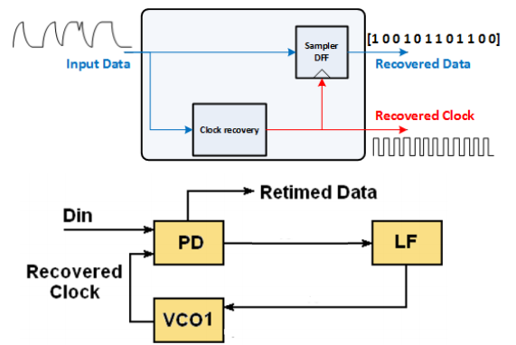
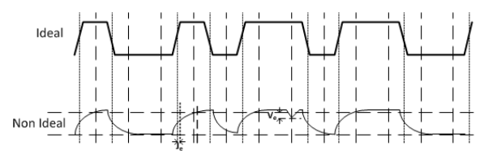
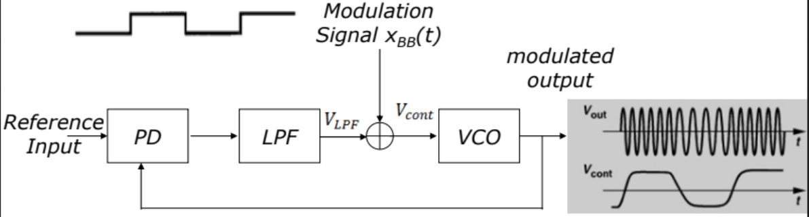
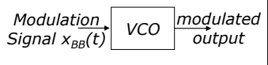
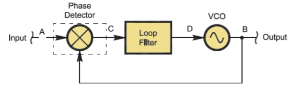
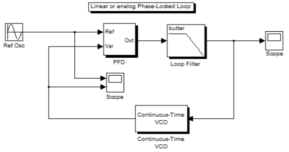
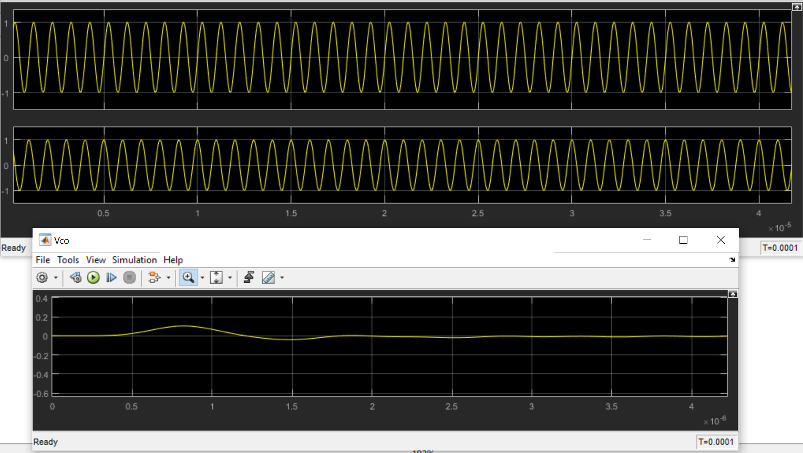
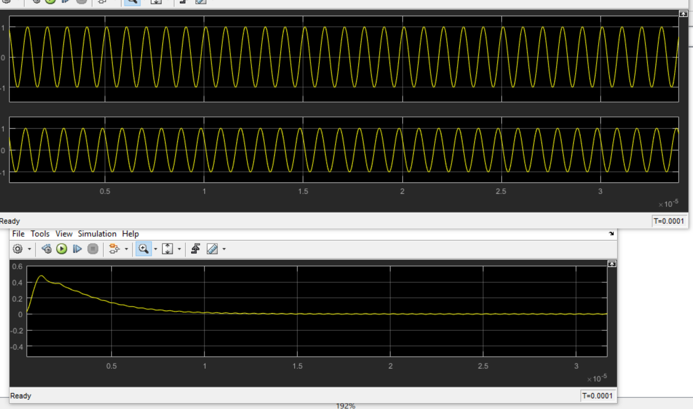

اللهم لا علم لنا الأ ما علمتنا به انك انت علام الغيوب
Introduction
PLL Project
Theoretical Part:
a)what is the application of Clock and Data Recovery (CDR) circuit?
Describe briefly how to use PLL in CDR Applications
The CDR recovers the exact timing of the incoming data

CDR and DDR
The recovering timing is utilized to sample the data at the optimum time
CDR minmizes jitter of the input signal
Due to TX and channel non-idealitieis signal integrity is compromised at the RX input

TX
Non-idealities in data transition time is defined as excess phase (or jitter)
The clock and data recovery (CDR) system is reponsible for dealing with jitter
b)Describe briefly how to use a PLL in modulation/demodulation applications

PLL in Modulation and Demodulation
$$X_{FM}(t)={A_ccos[\omega_ct+K_{VCO}\int^t_{-\infty}{x_{BB}(\tau)d\tau}]}$$

VCO
c)Describe briefly the operation of a Delay Locked Loop (DLL)
and mention the advantages & disadvantages compared to a PLL.
d)Show the schematic of a dual-modulus (2/3) divider.
Hint: This is composed of a divide-by-2 and a divide-by-3 circuits.
Simulate the divider in both modes using ideal logic (using Cadence).
e)What is an all-digital PLL (ADPLL)?
Show the block diagram and the main building blocks
Simulation Part:
The purpose of this part is to simulate the (linear) PLL circuit in Simulink environment. As discussed in the lecture,
the PLL is widely employed in communication and electronic application as it has many functions.
In this project, you are going to simulate the PLL as a circuit that performs synchronization between two signals that have different phase and frequency.

Fig(1):Phase Locked Loop

Fig(2):Simulink Model for PLL
Question 1,2,3
The type of PLL shown in fig(2) is linear model for PLL where, The Model in Figure 2 has three main components:
The phase frequency detector (PFD):identify phase shift between reference signal
The loop filter (LF):it is the controller of the PLL which takes voltage input from detector to generate required signal for VCO
The voltage controlled oscillator (VCO):Generates oscillating frequency according to dc voltage input
The oscillator: the signal generator that generates the sinusoidal signal we want to synchronize with
The scope: a visualization block that displays the signal with time
Question 4
The input is a sinusoidal with frequency of \(10^6Hz\) and zero initial phase
The VCO has a free running code of \(10^6 Hz\) and gain \(K_{VCO}\) of \(10^5\)Hz/Volt
The low pass filter has a pass-band edge frequency \(10^6\)Hz, order 7, and Butterworth type

Linear PLL Simulation
Question 5
Repeat Question 4 with the following setup change:
The input is sinusoid with frequency equal to \(10^6Hz\) and phase shift of \(\pi \over 3\)

Linear PLL @\(\pi \over 3\) phase shift
Question 6
The input is a sinusoidal with a frequency equal to \(10^6\) and initial phase shift of \(\pi \over 5\)